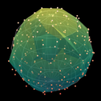

Software for applied topology research
The applied topology field grows each day, and with this growth comes a variety of new tools. Our group has contributed to this effort, but we also appreciate the tools that others have created. This page is meant to serve as a resource for people to learn more about our work and to find additional tools that might be useful in their research.
Open Applied Topology

Open Applied Topology (OAT) is a library for fast, user-friendly algebra and topology. Developed by PNNL as an extension of our collaborative ExHACT project, OAT has:
- a fast backend written in Rust, called oat_rust
- a frontend for Python users, called oat_python
- tutorials published as jupyter notebooks
Additional tools
There is a tremendous amount of work going on in the computational topology community, so this page will be out of date shortly (and already misses plenty). Thus, this page is meant primarily to be a jumping-off point, not a comprehensive list. However, if you'd like me to add something, please let me know, and please don't be offended if you don't see something here -- all omissions are unintentional.
C++ Python Julia R Java Matlab
C++
- CHomP
- ChunkyEuler (also has python scripts)
- CubicalRipser (with python wrapper)
- Cubicle (also has python scripts)
- Dionysus and Dionysus 2
- flagser
- GUDHI
- giotto-tda (also Python)
- Hera
- Perseus
- Persistence Landscape Toolbox
- PHAT
- Ripser-live (browser) and Ripser
- Ripser++ (also Python, GPU)
- SimBa and SimPer
- Topology ToolKit
Python
Julia
R
Java
Matlab
- CliqueTop and PyCliqueTopWe include CliqueTop for historical reasons or Matlab-only applications. PyCliqueTop is a Python implementation of the same wrapper that uses the Ripser persistent homology solver and thus is dramatically more time- and memory-efficient. OAT does not currently implement the precise syntax or workflow of CliqueTop, but provides substantially more functionality than either alternative.